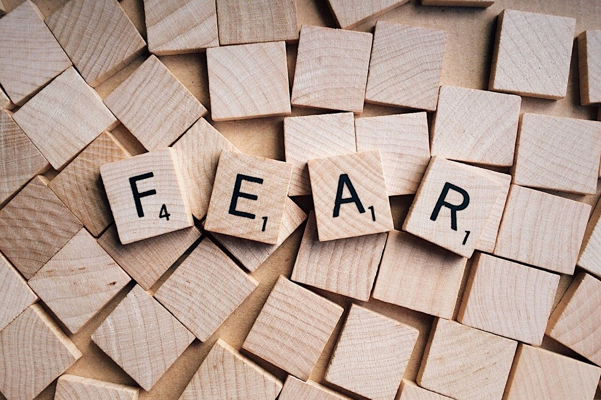
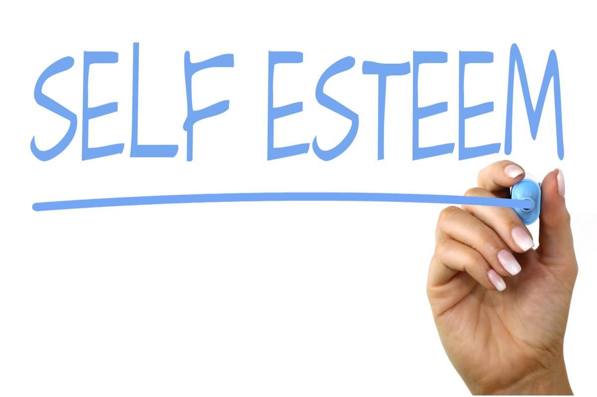

A lack of discipline and focus would lead to non-productivity in your life.
Fear is a vibration that the universe laughs at. The gods would never respect a fearful being. In the animal kingdom, fearful entities do not survive long. A dog would attack you if you are afraid, but if you show courage, it would leave you alone.
Being grateful everyday that you are alive is something to greatly appreciate, because people die everyday. A humble person has a tamed ego, so be humble.
Never allow emotions such as envy, hate, or anger to enter your life. Take life very seriously, grow your own garden. Never stick your nose in other's gardens. Do not be a cancer or parasite on the planet. Be the hardest working person in your family.
In the world we live in today, many young adults suffer with low-self esteem because of a lack of self-respect and security. This lack of self-respect is normally brought on from growing up inside of a toxic household or poor environment overall, perhaps the parents didn't teach much moral values or abused their kids. Don't judge others based on race or ethnicity, judge them based on their character. You are who you hang out with, make sure they are a positive group of individuals who are productive with their lives. In mathematics, a " + " and a " - " will always = a " - ", therefore hanging with negative people will always lead to a negative lifestyle.
There would be many things in life in which you would not like, but you would not be able do anything about it. Just focus on controlling what you can. Don't pay attention to the news, because a lot of the stories aren't true, and overall the news brings a negative low-frequency.